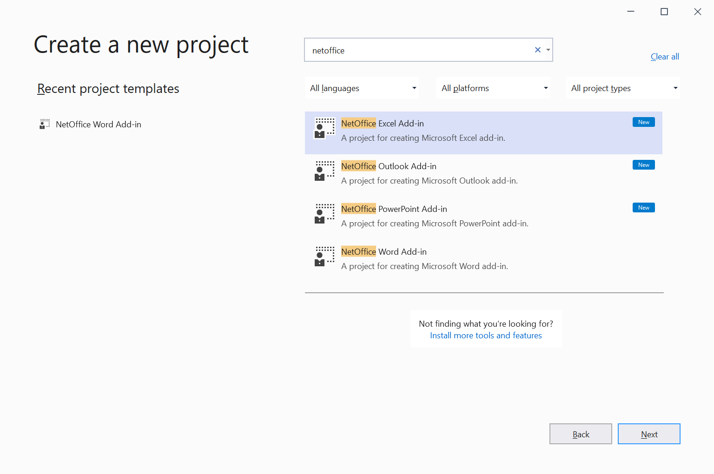

Microsoft Office Add-ins using NetOffice
You can use the NetOffice library to create .NET Framework applications that extend Office. These applications are also named in old MSDN documentation as Office solutions or COM Add-ins for Microsoft Office.
Getting Started
Download our NetOffice extension from the Visual Studio Marketplace.
In the Create new project dialog search for NetOffice and select a template based on the Microsoft Office application you want to extend.

Look for the MyAddin class in the project. Use the MyAddin_OnConnection method
to add handlers for the events provided by Office application.
using NetOffice.ExcelApi.Tools;
[ComVisible(true)]
[ProgId("ExcelAddinSample.MyAddin")]
[Guid("CC85F97A-F409-4497-B2F2-A9581D4A2ED2")]
[COMAddin("MyAddin", "Addin description.", LoadBehavior.LoadAtStartup)]
public class MyAddin : COMAddin
{
private void MyAddin_OnConnection(object application, ext_ConnectMode connectMode, object addInInst, ref Array custom)
{
this.Application.WorkbookOpenEvent += Application_WorkbookOpenEvent;
}
}
Advanced Add-ins
You project can have multiple add-ins targeting different Microsoft Office applications.
Each add-in class which extends COMAddin must have its unique [ProgId] and [Guid] values so it can be
properly identified in COM infrastructure. Each add-in class must have the [ComVisible(true)] attribute.
Add-in classes must extends from the COMAddin class provided by the NetOffice library.
COMAddin Classes
NetOffice provides COMAddin classes for each Microsoft Office application.
You will find the COMAddin class in the Tools namespace in each NetOffice
library for an Office application.
| Office Application | NetOffice package | Link | COMAddin Class |
|---|---|---|---|
| MS Word | NetOfficeFw.Word |
 |
NetOffice.WordApi.Tools.COMAddin |
| MS Excel | NetOfficeFw.Excel |
 |
NetOffice.ExcelApi.Tools.COMAddin |
| MS PowerPoint | NetOfficeFw.PowerPoint |
 |
NetOffice.PowerPointApi.Tools.COMAddin |
| MS Outlook | NetOfficeFw.Outlook |
 |
NetOffice.OutlookApi.Tools.COMAddin |